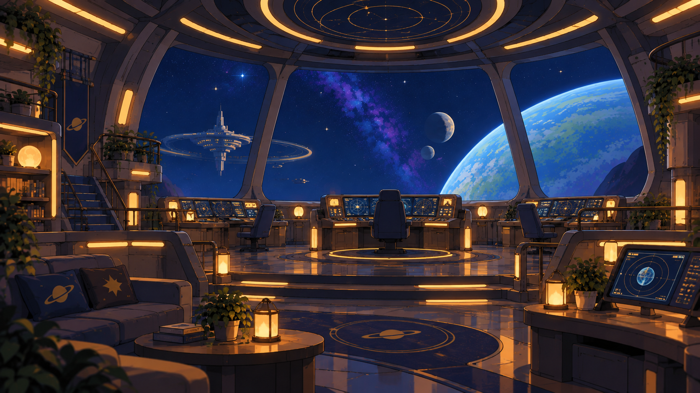

Today
Who left you something, and what the room knows
the badge's overlay
Your badge scanned the room on your way in. The people who left you something are standing there, waiting — poke one when you want to.

the badge saw: three notes waiting, and the console wanting you. Nothing here is urgent.
Focus · Renai’s badge
The console — 2 things need you
the room’s own state · 2 things need you
-
Evening medicine
due 20:00
From your own list. It stays here until you mark it done.
-
One connection is down
12 min ago
The other connection is fine, so nothing is lost.
› What this room is made of
- Connections
- 2 · both fine
- Last checked
- 20:39:12
- Sound
- none — nothing pings
- Overlay
- your badge's, not the room's
Focus · Renai’s badge
Renai, on shift
on shift · watching what comes in · 3 letters
Three letters came while you were away. None urgent. Shall I read them to you?
- MiraThree signals, same region. Not named yet.3 h
- Burrito J.The night market returns on Friday.1 h
That is all of them. A letter ends.
Focus · Renai’s badge
Mira's note
found by your badge · 3 h ago · waiting
Three signals, same region. I have not named it yet — I wanted you to see it before I did.
Left on the shelf by the window, 3 hours ago.
Focus · Renai’s badge
A note from Burrito Journalism
found by your badge · 1 h ago · waiting
The night market returns on Friday. Come hungry.
Written on the back of a menu, an hour ago.
Focus · Renai’s badge
Bruma's receipt
found by your badge · 4 min ago · waiting
Today's records are filed. Nothing was lost.
Folded once, four minutes ago.
signaturegold ink over the world · the badge’s Focus is Renai’s own make · other makers’ lenses still to come